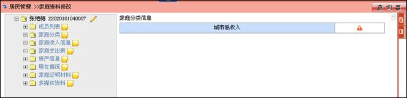

家庭分类维护
系统中的家庭分类是由系统管理员在后台设定的，通过分析家庭信息计算得出，当家庭信息维护完成时，点击“”，系统会计算出当前系统家庭分类。
当分类信息计算得出后，录入人员需要对得出分类进行确认，只有确认后分类信息，才能用于统计。

点击“”后，显示“”表示该分类确认。如果该家庭分类已确认，点击图标“”后，图标改变为“”此时这个家庭分类状态未确认。
如果家庭信息发生改变应点击家庭分类重新计算分类信息。
新建家庭